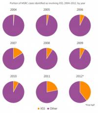
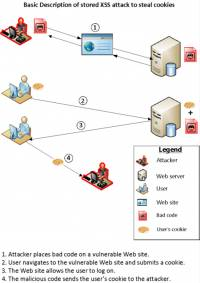

Anti Cross Site Scripting Library
Introduction
- Cross-site scripting (XSS) is an attack technique in which an attacker inserts malicious HTML and JavaScript into a vulnerable webpage, often in an effort to distribute malware or to steal sensitive information from the website or its visitors.
- According to the Microsoft Security Intelligence Report Volume 13, there has been a significant increase in reported XSS cases over the past two years, to the point where XSS vulnerabilities have started to displace other types of reported vulnerabilities by percentage.
- An analysis of the vulnerabilities reported in the first half of 2012 revealed that 37% of all verified vulnerabilities involved XSS techniques that the Internet Explorer XSS Filter can mitigate.
- XSS vulnerabilities occur whenever an application takes data that originated from a user and sends it to a web browser without first properly validating or encoding it.
- XSS attacks can be used to hijack user sessions, deface websites, conduct port scans on victims’ internal networks, conduct phishing attacks and/or take over users’ web browsers.
{kind=link}
Different Types of XSS Attacks
- In a typical XSS attack, an attacker causes a malicious script to execute in a prospective victim’s browser when visiting a legitimate website.
- In a reflected attack, the attacker tricks the victim into submitting the malicious script to the vulnerable site (for example, by visiting a specially crafted URL with the script embedded in the query string).
- In a stored attack, the attacker uploads the malicious script to a vulnerable website in such a way that the script will be exposed to subsequent visitors and execute in their browsers.
- The following figure illustrates how a basic stored XSS attack can be used to steal cookie files from a victim’s computer.
- 
{kind=link}
XSS Mitigations
- Microsoft integrates anti-cross-site scripting measures into its products to help protect against these types of attacks. For example, recent versions of Internet Explorer have included a number of XSS mitigations, such as:
- HttpOnly cookies. Introduced in Windows Internet Explorer 6 Service Pack 1 in 2002, HttpOnly is a flag that a website can set when sending a browser cookie to a client. If the HttpOnly flag is set for a cookie, it cannot be accessed by client-side scripts in a browser that supports the flag. The HttpOnly flag is supported by recent versions of most major desktop and mobile browsers. For more information, see the "Mitigating Cross-site Scripting with Http-only Cookies."
- XSS Filter. Introduced in Windows Internet Explorer 8, the XSS Filter is a component of Windows Internet Explorer that identifies and neutralizes likely XSS attacks. For more information, see the entry "IE8 Security Part IV: The XSS Filter” (July 2, 2008) at the Internet Explorer Engineering Team blog (blogs.msdn.com/ie).
- SmartScreen Filter. Introduced in Windows Internet Explorer 8, SmartScreen Filter blocks access to known harmful websites, which can include sites compromised by XSS.
- Inline frame security and the HTML5 Sandbox: Website developers can specify a sandbox attribute for individual inline frames (IFrames). When a compliant browser loads a sandboxed IFrame with content from a domain other than the one hosting the frame, scripts and other potentially dangerous content are disabled. Several modern browsers support this HTML5 model, including Internet Explorer 10. For more information, see the article "How to Safeguard your Site with HTML5 Sandbox” at the Microsoft Developer Network (msdn.microsoft.com).
- The Microsoft Anti-Cross-Site Scripting Library is an encoding library designed to help developers protect their ASP.NET web-based applications from Cross-Site Scripting attacks.
- It differs from most encoding libraries in that it uses the allow-listing technique, sometimes referred to as the principle of inclusions, to provide protection against XSS attacks.
- This approach works by first defining a valid or allowable set of characters, and encodes anything outside this set (invalid characters or potential attacks). The allow-listing approach provides several advantages over other encoding schemes.
- It is also important that server side security features that also do validation are built into the server side application. Most modern websites have an API layer between web servers and database back ends. Using a Security Development Lifecycle process that includes things like architectural mitigations can also be very helpful in driving a more holistic approach to solving issues like XSS.
Helpful Resouces
References
Panel title
Percipit Mnesarchum
Molestie Phaedrum Luptatum
constituam Habeo adipisci Inani
zril Forensibus sea Habeo
adipisci Minimum corrumpit Regione
suscipit Has et partem Percipit
Mnesarchum Molestie Phaedrum
Luptatum constituam Habeo
adipisci Inani zril Vel
nisl albucius Habeo adipisci Minimum
corrumpit Regione suscipit Percipit
maiestatis Regione suscipit Percipit
maiestatis
Subtitle